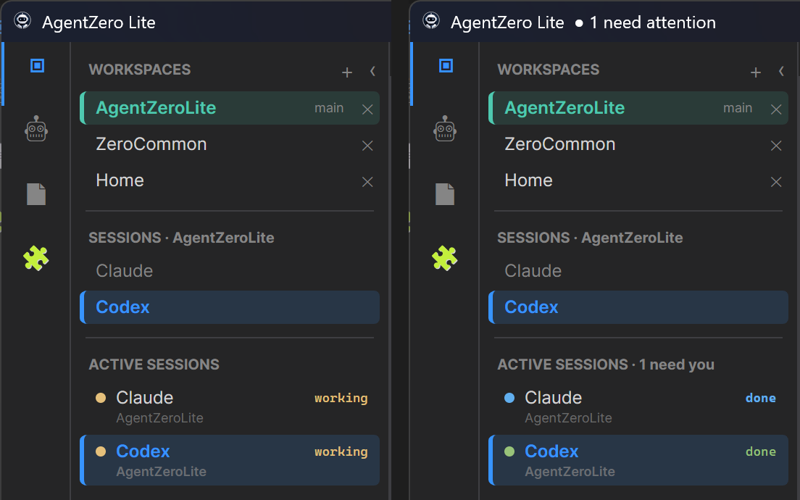
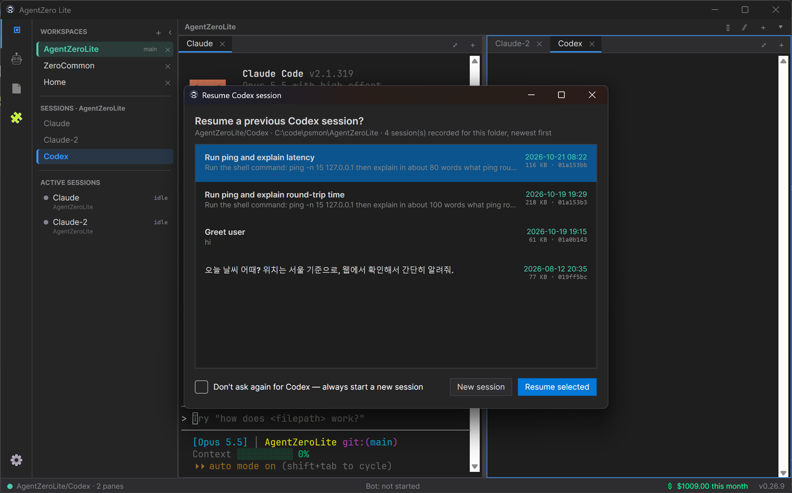
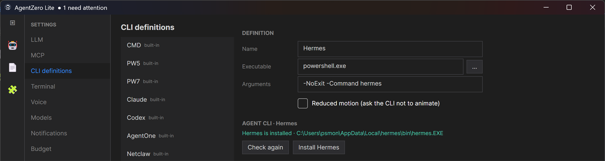
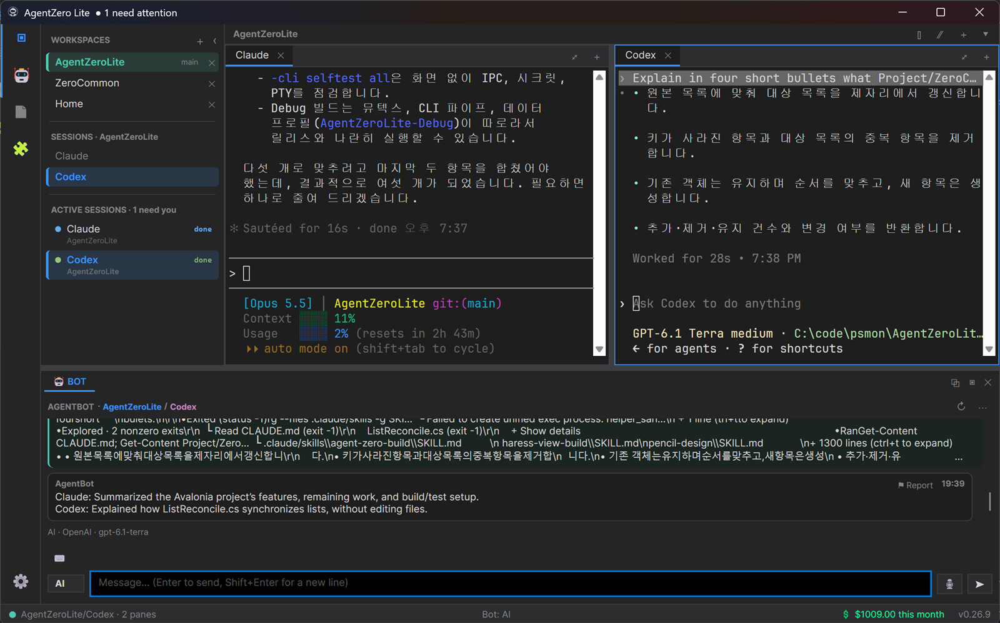
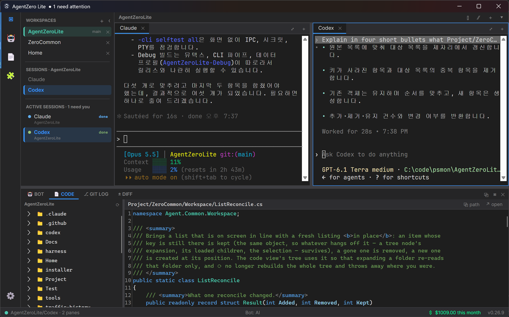
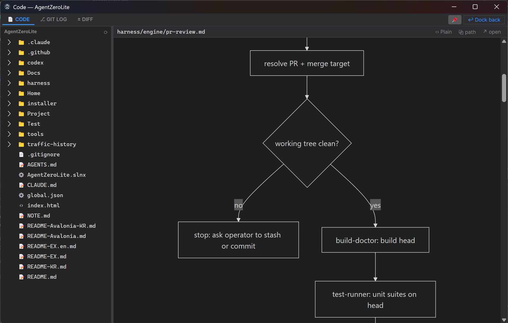
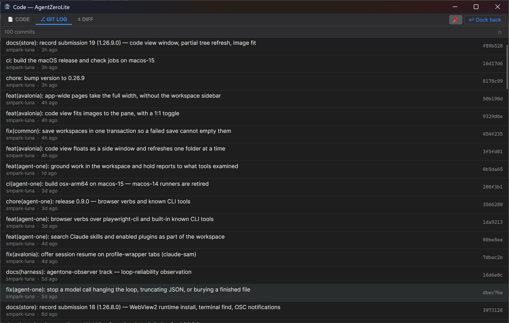
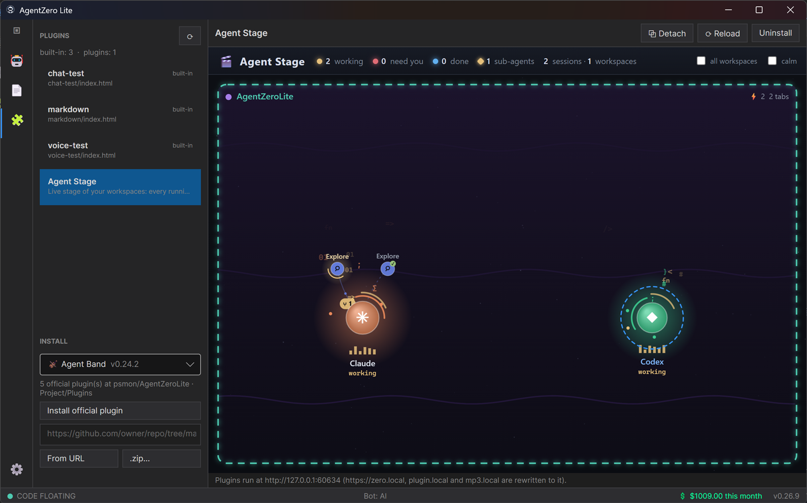
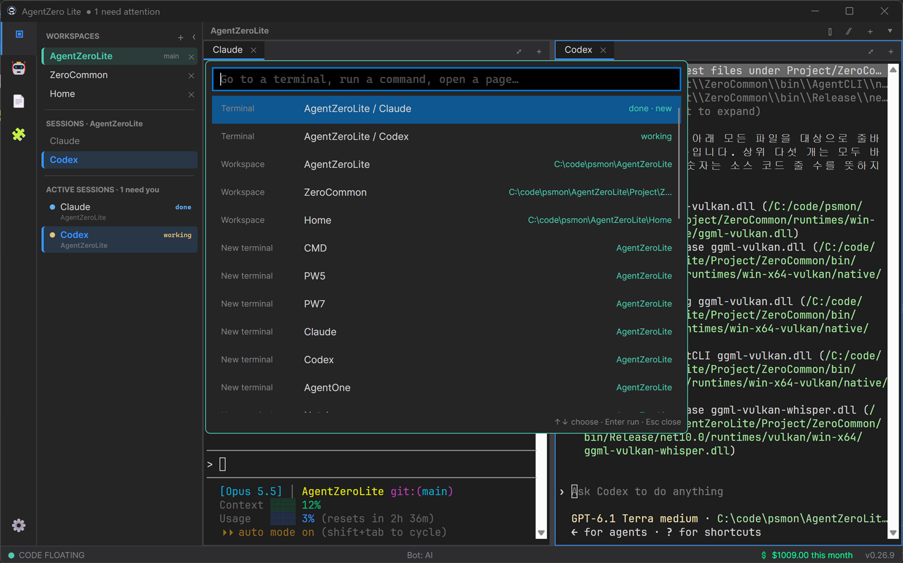

Claude Code, Codex, PowerShell 같은 CLI를 진짜 터미널 탭으로 열고, 분할 화면으로 배치하고, 프로젝트마다 워크스페이스를 따로 둡니다. AgentZero Lite는 어느 에이전트가 일하는 중인지, 어느 쪽이 내 답을 기다리는지, 어느 쪽이 끝났는지 알려 줍니다. 내장 어시스턴트는 터미널을 읽고 대신 조작할 수 있고, 모든 기능은 어떤 셸에서든 스크립트로 다룰 수 있습니다.
Open Claude Code, Codex, PowerShell or any other CLI in real terminal tabs, arrange them in split panes, and keep each project in its own workspace. AgentZero Lite tells you which agent is working, which one is waiting for you and which one is done; a built-in assistant can read the terminals and drive them for you; and everything is scriptable from any shell.
계정도, 텔레메트리도 없습니다 — 설정과 기록은 내 PC에 남습니다. 오픈 소스입니다. 아래 화면은 모두 실제 앱(v0.26.9)을 띄워 찍은 것입니다.
No account, no telemetry — your settings and history stay on your PC. Open source. Every screen below was captured from the running app (v0.26.9).
🖥 에이전트를 위한 터미널 — 탭, 분할 화면, 워크스페이스
🖥 Terminals for your agents — tabs, split panes, workspaces
TERMINAL
진짜 터미널
Real terminals
탭 하나하나가 Windows 의사 콘솔(ConPTY)이고 xterm.js가 그립니다 — Claude Code, Codex, Hermes Agent, netclaw, PowerShell, CMD, 직접 추가한 어떤 프로그램이든. macOS·Linux에서는 zsh/bash가 도는 진짜 PTY입니다.
Each tab is a Windows pseudo-console (ConPTY) drawn by xterm.js — Claude Code, Codex, Hermes Agent, netclaw, PowerShell, CMD or any program you add. On macOS and Linux it is a real PTY with zsh or bash.
SPLIT
분할 화면 · 창 분리
Split panes · detach
오른쪽·아래로 나누고, 탭을 다른 칸으로 옮기고, 터미널을 별도 창으로 떼어 냈다가 다시 붙입니다 — 떼어 내도 계속 실행되고 화면도 그대로입니다.
Split right or down, move tabs between panes, or detach a terminal into its own window and dock it back — it keeps running and keeps its screen.
WORKSPACES
폴더 = 워크스페이스
Folder = workspace
프로젝트마다 탭과 배치를 따로 갖고, 다음에 앱을 열면 그대로 복원됩니다. 사이드바에 git 브랜치와 worktree 목록 — Claude Code·Codex가 만든 것도 — 이 보이고 클릭 한 번으로 옮겨 갑니다.
Each project keeps its own tabs and layout, restored the next time you open the app. The sidebar shows the git branch and the worktrees — including those Claude Code and Codex create — one click away.
FIND
터미널 내 검색
Find in terminal
Ctrl+Shift+F 로 스크롤백 전체를 검색합니다 — 일치 개수, 이전/다음, 대소문자 구분, 정규식.
Ctrl+Shift+F searches the whole scrollback — match count, previous/next, match case and regular expressions.
🟡 나를 기다리는 에이전트를 바로 알기
🟡 Know which agent needs you
사이드바의 ACTIVE SESSIONS는 모든 워크스페이스의 터미널을 working · waiting · done으로 보여 줍니다. Claude Code, Codex, Hermes Agent는 화면만이 아니라 에이전트가 스스로 남기는 상태 기록을 읽기 때문에, 진행 중인 턴은 정말 끝날 때까지 working으로 남습니다. 일을 마치거나 질문을 하면 화면 구석에 팝업이 뜨고 작업 표시줄이 깜박이며, 누르면 그 터미널로 갑니다.
The sidebar's ACTIVE SESSIONS list shows every terminal across all workspaces as working, waiting or done. For Claude Code, Codex and Hermes Agent the state comes from what each agent records about itself, not only from the screen, so a running turn stays working until it really ends. When an agent finishes or asks something, a popup appears in the corner of the screen and the taskbar flashes; click it to jump to that terminal.

왼쪽: 두 에이전트가 작업 중 · 오른쪽: 둘 다 끝나고 창 제목에 "1 need attention"
Left: both agents working · right: both done, and the title says "1 need attention"
↩ 터미널을 열 때 이전 대화 이어가기
↩ Resume a conversation when its terminal opens
Claude Code나 Codex 탭을 열면 그 에이전트가 이 폴더에서 이미 나눈 대화를 최신순으로, 제목과 첫 프롬프트와 함께 보여 줍니다 — 새 세션도 고를 수 있고, "Don't ask again"으로 에이전트별로 끌 수 있습니다.
Opening a Claude Code or Codex tab offers the conversations that agent already has for this folder, newest first, with their title and first prompt — or a new session. "Don't ask again" turns it off per agent.

🧰 에이전트 CLI 설치 확인과 설치
🧰 Agent CLIs checked and installed for you
설정 → CLI definitions에서 내장 에이전트(Claude Code, Codex, AgentOne, netclaw, Hermes Agent)를 고르면 설치 여부를 확인하고, 없으면 설치해 줍니다 — npm으로, netclaw와 Hermes는 제작사 설치 스크립트로. 두 번째 Claude 계정처럼 다른 명령도 직접 추가할 수 있습니다.
In Settings → CLI definitions, selecting a built-in agent (Claude Code, Codex, AgentOne, netclaw, Hermes Agent) checks whether it is installed and offers to install it — with npm, or with the vendor's install script for netclaw and Hermes. Add your own entries for any other command, such as a second Claude account.

🤖 AgentBot — 터미널을 읽고 조작하는 어시스턴트
🤖 AgentBot — an assistant that reads and drives your terminals
아래쪽 BOT 패널은 입력을 포커스된 터미널로 보냅니다. CHT는 글을, KEY는 Ctrl+C·방향키 같은 키를 그대로 넘기고, AI 모드는 터미널을 읽고 입력을 보내고 답을 기다려 에이전트 사이에 일을 전달하는 에이전트입니다. 아래는 AI 모드에 "Claude와 Codex가 방금 한 일"을 물은 실제 결과입니다.
The BOT panel at the bottom sends what you type to the terminal in focus. CHT types text, KEY passes keys such as Ctrl+C and arrows straight through, and AI mode is an agent that reads the terminals, sends them input, waits for the answer and relays work between agents. Below, AI mode was asked what Claude and Codex had just done.

MODEL
로컬 모델 또는 OpenAI 호환 API
Local model or OpenAI-compatible API
내 PC의 로컬 모델(Windows) 또는 설정 → LLM에 넣은 엔드포인트에서 돕니다.
Runs on a local model on your PC (Windows) or on the endpoint you set in Settings → LLM.
MCP
MCP 서버 도구
MCP server tools
설정 → MCP에서 stdio·HTTP 서버를 추가하고, 도구를 하나씩 허용해 AI 모드가 쓰게 합니다.
Add stdio or HTTP servers in Settings → MCP and allow their tools one by one for AI mode.
🎙 VOICE
말로 묻기
Talk to it
마이크 버튼을 누르고 말하면 말하는 동안 받아 적고, 멈추면 보냅니다 — NVIDIA Nemotron 스트리밍 음성 인식이 내 PC에서 돕니다(한국어·영어 등).
Press the microphone and speak: your words appear as you talk and are sent when you pause — NVIDIA Nemotron streaming speech recognition, on your PC (Korean, English and more).
📄 코드 뷰, git 로그, diff 리뷰
📄 Code view, git log and diff review
CODE 탭(📄 또는 Ctrl+Alt+E)은 워크스페이스 파일을 VS Code 문법 강조로 보여 주고, 이미지는 패널에 맞추고, Markdown은 Mermaid 다이어그램까지 렌더링합니다. 폴더를 펼치거나 선택하면 새로 생기거나 지워진 파일이 바로 반영됩니다.
The CODE tab (📄 or Ctrl+Alt+E) shows the workspace's files with VS Code syntax highlighting, fits images to the panel and renders Markdown with Mermaid diagrams. New and deleted files show up when you open or select a folder.


별도 창으로 띄워 맨 위에 고정, Dock back으로 복귀Float it into its own window, pin it on top, Dock back when done

GIT LOG — 로컬 git으로 읽은 최근 커밋GIT LOG — recent commits, read with your local git
DIFF는 새 파일을 포함한 작업 트리 변경을 보여 주고, 줄마다 메모를 달아 터미널의 에이전트나 AgentBot에 한꺼번에 보낼 수 있습니다.
DIFF shows the working tree's changes, new files included; add a note to any line and send all the notes to the agent in the terminal or to AgentBot.
🎬 Agent Stage와 플러그인
🎬 Agent Stage and other plugins
Plugins 페이지(🧩)는 웹 플러그인을 앱 안에서 실행합니다. 공식 플러그인 Agent Stage는 워크스페이스를 무대로, 터미널을 에이전트로 그립니다 — 일하는 동안 움직이고, 내가 필요하면 깜박이고, Claude Code·Codex·Hermes가 띄운 서브에이전트를 주위에 크루로 보여 줍니다. 에이전트를 누르면 그 터미널로 갑니다.
The Plugins page (🧩) runs web plugins inside the app. The official Agent Stage plugin draws each workspace as a stage and each terminal as an agent that animates while it works, pulses when it needs you, and shows the sub-agents Claude Code, Codex and Hermes start as a crew around it. Click an agent to jump to its terminal.

서브에이전트 여덟 개를 거느린 Claude 세션 — 역할 이름과 색이 각자 붙고, 끝난 크루는 부모에게 혜성을 보내며 사라집니다A Claude session with eight sub-agents — each with its role name and colour; a finished one sends a comet back to its parent and fades
그 밖의 공식 플러그인 — Voice Note(화자 구분 받아쓰기), Agent Band(실시간 음악 인식), 토큰 대시보드 — 는 같은 페이지의 목록에서, 또는 GitHub 폴더나 .zip으로 설치합니다. 플러그인은 별도 창으로 떼어 낼 수 있습니다.
Other official plugins — Voice Note (speech-to-text with speaker labels), Agent Band (live music recognition), token dashboards — install from the list on the same page, or from a GitHub folder or a .zip. A plugin can be detached into its own window.
⚡ 명령 팔레트, 예산, 단축키
⚡ Command palette, budget and shortcuts

PALETTE
명령 팔레트
Command palette
Ctrl+Shift+P — 어떤 터미널, 워크스페이스, 페이지, 명령으로든 바로 이동.
Ctrl+Shift+P — jump to any terminal, workspace, page or command.
BUDGET
에이전트 비용
Agent spend
터미널의 에이전트들이 이번 달 쓴 비용을 모델별·프로젝트별로, 선택한 월 한도와 함께. 이번 달 지출은 상태 바에 나오고, 가격은 직접 고칠 수 있습니다.
What the agents in your terminals cost this month, by model and by project, against an optional monthly cap. The month's spend is on the status bar; prices are editable.
SHORTCUTS
단축키
Shortcuts
설정 → Shortcuts에서 키를 바꿉니다.
Change the keys in Settings → Shortcuts.
⌨ 어떤 셸에서든 스크립트로
⌨ Scriptable from any shell
위의 기능은 모두 같은 실행 파일로 스크립트에서 — 또는 다른 에이전트가 — 다룰 수 있습니다. -cli help agentzero는 에이전트를 위해 쓴 안내서라, Claude나 Codex 탭에 한 번 가르쳐 두면 에이전트끼리 서로의 터미널과 대화할 수 있습니다.
Everything above can be driven by a script — or by another agent — through the same executable. -cli help agentzero is a guide written for agents: teach it to a Claude or Codex tab once and the agents can talk to each other's terminals.
AgentZeroLite.exe -cli terminal-list # workspaces and tabs
AgentZeroLite.exe -cli terminal-send 0 1 "run the tests" # type into workspace 0, tab 1
AgentZeroLite.exe -cli terminal-wait 0 1 --until done # wait for the agent to finish
AgentZeroLite.exe -cli terminal-read 0 1 --last 2000 # read what it answered
AgentZeroLite.exe -cli bot-ask "what is the Codex tab doing?" # ask AgentBot in AI mode
Command
동작
What it does
status · terminal-list
앱 상태, 워크스페이스와 탭
App state; workspaces and their tabs
terminal-send · -key · -read · -wait
입력, 키 누르기, 화면 읽기, 에이전트 상태 대기
Type, press keys, read the screen, wait for an agent state
terminal-alias
터미널에 이름을 붙이고 --alias로 지정
Name a terminal and target it with --alias
agent-state · attention
터미널별 에이전트 상태, "나를 기다림" 알림
Each terminal's agent state; the "needs you" notifications
layout
칸 나누기·옮기기·포커스, 워크스페이스 전환
Split, move and focus panes; switch workspaces
bot-chat · bot-ask
AgentBot에 메시지 넣기, AI 모드로 질문
Post into AgentBot; ask it a question in AI mode
code · worktree · plugin · mcp
코드 뷰, git worktree, 플러그인, MCP 서버
Code view, git worktrees, plugins, MCP servers
cost
이번 달 에이전트 지출(GUI 없이도 동작)
This month's agent spend (no GUI needed)
help · help agentzero
전체 명령, 에이전트용 안내서
All commands; the guide for agents
🛠 설치
🛠 Install
Windows 10/11 x64가 공식 지원 대상이며, Microsoft Store판을 추천합니다. macOS(Apple Silicon)와 Ubuntu/Debian x64는 테스트 빌드입니다. 모두 자가 포함(self-contained) 빌드라 .NET을 따로 설치할 필요가 없습니다.
Windows 10/11 x64 is the supported platform, and the Microsoft Store edition is recommended. macOS (Apple Silicon) and Ubuntu/Debian x64 are test builds. Every build is self-contained, so there is no .NET to install.
WINDOWS · STORE · RECOMMENDED
Microsoft Store (추천)
Microsoft Store (recommended)
Store가 설치와 자동 업데이트를 맡습니다. 데이터(DB·설정)는 패키지 안에 따로 보관돼 설치판과 공유하지 않습니다.
The Store installs it and keeps it updated automatically. Its data (database, settings) stays inside the package, separate from the installer build.
설치 마법사(.pkg)로 /Applications에 설치합니다(macOS 12 이상). Apple Developer ID 서명 + 공증을 마쳐 더블클릭으로 설치됩니다. 로컬 LLM은 없고, AI 모드는 외부(OpenAI 호환) 공급자를 씁니다. v0.26.9에는 .pkg가 빠져 있어, 다음 릴리스 전까지는 v0.26.8의 것을 받으세요.
The installer (.pkg) puts it in /Applications (macOS 12 or later). Signed with an Apple Developer ID and notarized, so a double-click installs it. No local LLM — AI mode uses an external (OpenAI-compatible) provider. v0.26.9 shipped without the .pkg; use v0.26.8's until the next release.
데스크톱 Ubuntu 22.04 이상 · Debian 12용 .deb입니다. 아래 한 줄이 최신 버전을 필요한 시스템 라이브러리(WebKitGTK · GTK 3)와 함께 설치하고, 다시 실행하면 업데이트됩니다. 로컬 LLM · 마이크 입력은 없고, AI 모드는 외부(OpenAI 호환) 공급자를 씁니다.
A .deb for desktop Ubuntu 22.04+ and Debian 12. The line below installs the latest version with the system libraries it needs (WebKitGTK, GTK 3); run it again to update. No local LLM or microphone input — AI mode uses an external (OpenAI-compatible) provider.
계정이 없고 텔레메트리를 보내지 않습니다. 터미널, 설정, 기록은 내 PC에 남고, 입력한 API 키는 암호화해 저장합니다(Windows는 DPAPI). 개인정보 처리방침
No account and no telemetry. Terminals, settings and history stay on your PC, and API keys you enter are encrypted at rest (DPAPI on Windows). Privacy policy